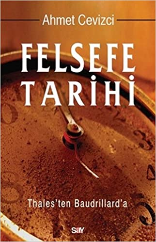
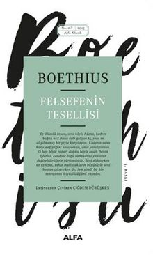

KİTAPLAR
Anasayfaya DönSayfa sonuna git
-

- Felsefe Tarifi- Ahmet CEVİZCİ
- Sokratesin Savunması -Platon
- Felsefenin Tesellisi -Boethus
Büyük Alman şairi ve düşünürü Johann Wolfgang von Goethe, "Üç bin yılın hesabını göremeyen karanlıkta yolunu bulamaz; günü gününe yaşar ancak" derken, sadece bireylerin değil, toplum ya da kültürlerin de felsefe tarihine duydukları ihtiyacı anlatmak istiyordu. Modern dünyanın karmakarışık ve her yönüyle bunaltıcı koşulları içinde insan, hayatını doğru yönetebilmek ve ona anlam katıp değer yükleyebilmek için felsefeye, büyük felsefi soruları yanıtlamaya ihtiyaç duyar. Felsefe yapmayı öğrenebilmek içinse felsefe tarihine ihtiyaç duyulur. Bunun da en önemli nedeni, büyük filozofların iki bin beş yüz yıldan beri ele aldığı konu ve soruları, hala onların bize sağladığı ipuçları veya argümanlar üzerinden sorguluyor olmamızdır. "Adaletin, mutluluğun, aşkın ne olduğu", "kimin, nasıl yönetmesi gerektiği", "siyasal bir sistemin hangi temel etik ve politik ilkeler üzerine inşa edileceği", "gerçekten var olanın ne olduğu", "bizim başkalarına karşı ne tür yükümlülüklerimizin bulunduğu" gibi soruları soranlar ilk bizler değiliz. Bu sorular, Sokrates, Platon ve Aristoteles tarafından da sorulmuş ve felsefe tarihi boyunca daha pek çok filozofun ilgi odağında yer almıştır. İşte bundan dolayıdır ki felsefe ve felsefe tarihi, entelektüel dünyamızı zenginleştirecek, yolumuzu bulmada bize yardımcı olacak fikirlerle ve çıkartabileceğimiz derslerle doludur. Çağdaş İspanyol düşünürü George Santayana "Geçmişi hatırlayamayanlar onu tekrarlamaya mecburdurlar" sözüyle tam da bunu kastediyordu. Ahmet Cevizci'nin Felsefe Tarihi, Antik Yunan'dan Hıristiyan ve İslam felsefesine, modernizmden postmodernizme kadar, işte bu iki bin beş yüz yıllık düşünce tarihini ayrıntılı, sistemli ve anlaşılır bir biçimde sunuyor.

Platon (MÖ yaklaşık 428-MÖ yaklaşık 348): Bugünkü üniversitenin atası sayılan Akademia'nın kurucusu ve hocası Sokrates'i konuşturduğu diyaloglarla felsefeyi yazıya en iyi aktarmış ustalardan biridir. Bu kitapta birbirini tamamlayan dört diyalog yer almaktadır. İlk diyalog olan Euthyphron'da yargılanışının öncesi anlatılır ve dinsizlikle suçlanan Sokrates'in inançları hakkında bilgi verilir. Sokrates'in Savunması'nda ise yargı süreci anlatılmaktadır. Kriton'da hüküm sonrası anlatılır, bir yurttaşın saygı duyması gereken ilkeler tartışılır. Platon'un en şiirsel eserlerinden biri olan Phaidon'daysa Sokrates'in son günü anlatılırken ruh hakkındaki düşünceleri yansıtılmaktadır.
Vatan haini suçlamasıyla, yargılanmaya bile gerek görülmeden bir zindana atılan ve idamını bekleyen Romalı filozof, Boethius’un tanrısal öngörü, kader ve özgür irade üzerine sorgulamalarını içeren en önemli yapıtıdır Felsefenin Tesellisi. Pagan dünyanın düşünsel öğretileri ile ortaçağın Hıristiyanlık düşüncesinin tam eşiğinde duran Romalı bir filozofun Felsefe’yle yaptığı iç hesaplaşmasına Felsefe’nin kendi dilinden tanık olma şansını yakaladığımız görkemli bir yapıttır. Antikçağ Yunan felsefesinden, yeni-Platonculuktan, Latin edebiyatından seçilen düşüncelerin seçkin bir karması ve filozofun gününe değin felsefe tarihinde başat rol oynayan Platon’un ve Aristoteles’in konuyla ilgili görüşlerinin şiirsel bir özetidir. Bu yapıt için belki de tek şey söylenebilir: inanç ile aklın muhteşem dansı.